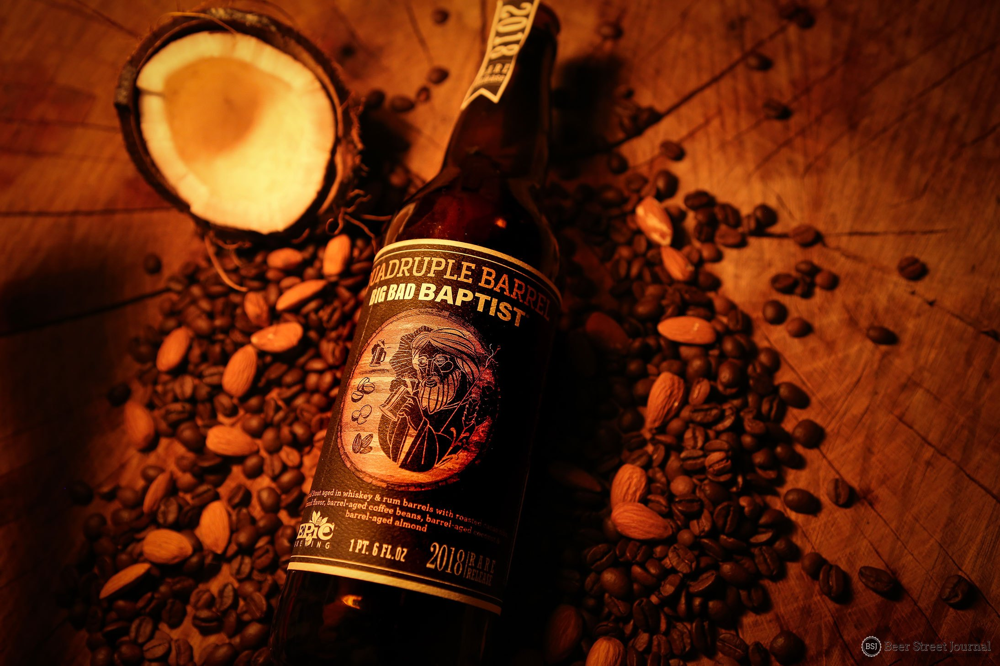

BIG BAD BAPTIST IMPERIAL STOUT
HOME
STOUTS
Big Bad Baptist
Epic Brewing Company
It’s Big, it’s Bad, Bourbon Barrel Aged Imperial Stout, with Coffee and Cocoa Nibs. Big Bad Imperial Stout with Cocoa nibs and Coffee beans. Each season’s release uses a different dark roasted coffee including a selections of variations such as Choclate Raspberry, Double Chocolate Peanut Butter, and Pecan Pie.
Located in Salt Lake City, Epic is Utah’s first brewery since prohibition to brew exclusively high alcohol content beer.Epic Brewing Company creates high-quality, fresh and extremely flavorful beer in small quantities with unending varieties..
Check out their site HERE 